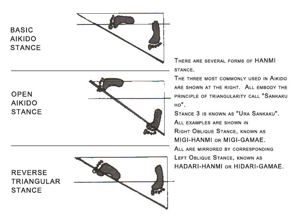
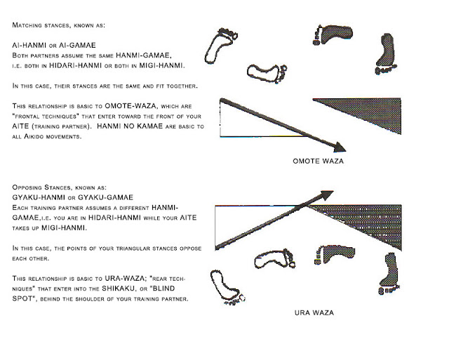

Kamae and Hanmi
Aikido is unusually explicit about geometry. Its ready posture is not described with adjectives but with a shape: a triangle whose base is the rear foot and whose apex is the forward hand. Its weight split is given as a number, 60 / 40. And the two ways of standing relative to an opponent have names that tell you which foot is forward. This article reads that geometry out of the aikido shelf.

The Ready Posture
Kamae is the posture itself; hanmi is the triangular, half-facing stance aikido actually stands in. Both words appear constantly across the shelf — Roedel’s basics book returns to them on nearly every page, and Saito’s weapons volumes assume them throughout. The posture is a half-facing stance: the body is turned roughly forty-five degrees off the line to the opponent, one foot forward, feet shoulder-width apart, knees soft.
The half-facing detail is what makes the stance work. Standing square-on presents a flat target and blocks your own hips; standing half-facing opens the hips and puts the body on a line it can already travel along. Tennis players know this as the difference between a square ready position and an athletic one with the shoulders already angled.
The Triangle
Roedel’s description is the clearest on the shelf and it is worth quoting for its precision. The stance forms a triangle: the rear foot is the base, and the forward hand is the apex. The rear foot is where the weight sits and where movement starts; the forward hand is the point of the triangle that reaches furthest toward the opponent.
Read as footwork, this single sentence resolves a question that tennis instruction often leaves vague. Which foot drives? The base — the rear one. Which direction does the body point? Along the line from base to apex. The triangle is not decoration; it is the answer to “where is my power and which way is it pointed.”

The three forms of hanmi in common use — basic, open and reverse-triangular. All embody the triangular principle called sankaku-ho; the examples are shown in right oblique stance (migi-hanmi), with the left versions mirrored. Diagram: Katsujinken Dojo, “Basic Aikido Stance and Movements”.
Ai-hanmi and Gyaku-hanmi
Two facing postures are named, and the names are a small lesson in how carefully this tradition watches the feet.
- Ai-hanmi (“matching” stance): both people have the same foot forward — both right, or both left. This is the posture most aikido techniques are drilled from, and it is the one that makes entering straight forward natural.
- Gyaku-hanmi (“opposite” stance): the partners have opposite feet forward — one right, one left. This is the posture that forces a turn to enter, and it is where most tenkan practice begins.
The distinction has no counterpart in tennis, where both players face the net rather than each other. But the underlying habit — noticing which foot your opponent leads with — transfers directly, because a player’s lead foot tells you which wing is stronger and which direction they will prefer to move.

Matching stances (ai-hanmi) feed omote-waza — frontal techniques that enter toward the front of the partner. Opposing stances (gyaku-hanmi) force ura-waza — rear techniques that enter the shikaku, the blind spot behind the shoulder. Diagram: Katsujinken Dojo, “Basic Aikido Stance and Movements”.
The 60/40 Rule
Aikido states its weight distribution as a number rather than a feeling: roughly sixty percent on the front foot, forty on the rear. Shioda gives this ratio in his basic posture, and it is the same instinct taiji expresses as the bow stance at 70 / 30 and forbids at 50 / 50. Two traditions with no shared history arrive at the same conclusion: a stance must declare which foot is in charge, and “equal” is not an answer.
The useful part for a player is the frame of mind. Sixty/forty is a number you can check. Most tennis players have never been asked to state what fraction of their weight is on their front foot — and yet that fraction decides how fast they can move in each direction.
On the Tennis Court
1. Name your base. The triangle’s base — the rear foot — is the foot that drives. A player who knows which foot is the base knows which foot to load before the first step.
2. Never stand square. The half-facing stance exists because a square stance blocks the hips. The ready position in tennis is angled for the same reason.
3. Put a number on your weight. The 60/40 habit turns “get ready” into a checkable instruction. If a player cannot say which foot carries more, the answer is almost certainly that both do — and that is the fault every tradition on this shelf names as the worst one.
Source Books
Bodo Roedel, Aikido — Những Điều Cơ Bản (Aikido — the basics) — the triangular kamae, rear foot as base, forward hand as apex: aikido_roedel_basics_vi
Cross-checked against Gozo Shioda, Total Aikido on the 60/40 split, and Morihiro Saito, Traditional Aikido, Tập 2 on hanmi in weapons work: aikido_total_aikido_vi · aikido_saito_sword_stick_v2_vi
All quotations translated from the Vietnamese readers of these editions. Diagrams are original work made for the TFL Footwork Research Project.
Figure credits: the two stance diagrams above are reproduced from Katsujinken Dojo, “Basic Aikido Stance and Movements” (2012).
← Beyond Taiji - Xingyi, Bagua and Chen Footwork | TFL Footwork Research Project | Irimi and Tenkan - The Two Steps Aikido Is Built From →